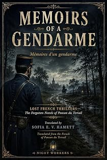

Mémoires d'un gendarme
by Pierre-Alexis Ponson du Terrail · translated by Sofia E. V. Hamettpar Pierre-Alexis Ponson du Terrail · traduit par Sofia E. V. Hamett
The bookLe livre
Saint-Donat, 4 September. A year ago the narrator promised old Sautereau, the gendarmerie sergeant, that he would write his memoirs one day. Three days back, coming home at sunset from the opening of the shooting, he and young Doctor L—— found the sergeant waiting for them. Jean-Nicolas Sautereau is retired now. A rural crime novel told by the man who investigated it, forty years before that was a genre.
Saint-Donat, 4 septembre. Il y a un an, le narrateur promettait au vieux Sautereau, maréchal des logis de gendarmerie, d'écrire un jour ses mémoires. Il y a trois jours, rentrant au soleil couchant de l'ouverture de la chasse, le jeune docteur L—— et lui ont trouvé le sergent qui les attendait. Jean-Nicolas Sautereau n'est plus gendarme : il a pris sa retraite. Un roman criminel rural raconté par celui qui a mené l'enquête, quarante ans avant que ce soit un genre.
From the opening pagesLes premières pages
The Sergeant’s Manuscript
Saint-Donat, 4 September.
Last year I promised old Sautereau, the gendarmerie sergeant, that one day I would write his memoirs. Three days ago — Friday evening, at sunset — young Doctor L—— and I were coming back from the opening day of the shooting on the plain when we found the sergeant waiting for us at les Charmilles.
Jean-Nicolas Sautereau is not a gendarme any longer. He has taken his retirement, and he has just been decorated. He has settled on his little bit of property across the Loire, in the Val: a small white house with a walled vineyard on one side of it and an acre of meadow on the other. The place came to him through his wife. For his own part, he put by a little out of thirty-five years’ pay and bought himself a holding of government stock, so that between them he and his wife have an income of 1,500 to 1,800 francs a year.
The little town of Saint-Gratien-au-Val, which begins where his garden ends, would dearly like to have the old sergeant for its mayor. He has refused.
“No, no, my friends,” he told the men who came to put it to him. “All my life I have been the law itself, walking about in a pair of boots where everybody could see it. I have had enough of authority, and I mean to rest. If you want advice, come and ask for it — but don’t ask me for anything else.”
Well, on Friday evening the old sergeant came to hold me to my promise. As it happens, he has cut the work down for me considerably by handing me a fat manuscript in which he has set down, very nearly day by day, the important events of his life. It is by following him day by day, and keeping strictly to the work of editor and arranger, that I shall tell this singular life.
A Pound of Powder
Forty years ago the Sologne was an altogether savage country. Nothing had been cleared yet, nothing drained. Muddy water lay asleep under the gorse, and the woods ran on one into another, opening here and there only on a poor stretch of sandy heath that would grow nothing. The hamlets were few and far between, the villages a long way one from another, and getting from any of them to any other was difficult when it was not impossible.
The people were stunted and badly off and had a hard time staying alive. A farmer only kept his head above water by not paying his rent. The peasant poached — with a gun, with snares, with every sort of engine — and nobody thought the worse of him for it. Since 1789 poaching in the Sologne had risen to the rank of an acknowledged trade; and, God above, what a trade. Game that was cheap enough by the time it reached the towns earned the man who took it a mouthful of bread. One of those dealers they call poultrymen in the centre of France, who go round buying eggs and butter and fowls, would work his way through the countryside, the farms, the huts of the charcoal-burners and the woodcutters, and pay eighteen to twenty-five sous for a hare, six for a red partridge, four or five for a grey. For a roe deer he gave a pound of powder.
So poaching was a more or less recognised way of staying alive, and the few big landowners in the Sologne, who shot themselves, never so much as considered how it might be put down — until the prefect of Loir-et-Cher was changed, at about the same time that the Marquis de Vauxchamps was returned as deputy.
All this was under the Restoration, right at the beginning of it. The new prefect, Monsieur de B——, was a shooting man and a stickler for shooting rights; the Marquis de Vauxchamps, who had a considerable estate in the middle of the Sologne between Romorantin and Salbris, hated poaching with a passion. The prefect and the deputy came to an understanding. In under a year every gendarmerie detachment had been doubled, and every village constable and forest keeper turned out and replaced by men from outside the country. The court at Romorantin joined the alliance and showed itself severe. The poor Sologne men were hunted and convicted, their guns were confiscated, and a second offence meant prison.
In the south there would have been risings, and armed ones. But the man of the Sologne has the marsh fever in him; he is mild, and he does no harm. The wildest of the poachers gave in, one after another, until very few of them were left.
Still, at the time this story begins, there were a few who defied all authority; and of these the boldest, the most furious, and the one who — Sologne born though he was — seemed to belong to some quite different race, by the violence and the temper of him, was Martin the Eel.
Where did the strange name come from? Martin lived with his wife and his five children in a filthy hut of daub with fir branches laid over it for a roof, deep in the woods on the edge of a pond called the Boars’ Pond. In that water, which gave off a pestilence of a smell every autumn, eels were common enough, and for a long while the poacher Martin had added fishing to his first trade, so that in the end people gave him the name of the fish he caught.
He was a small man, but strong, thickset, full of energy. Brown as a Moor, black-eyed, his teeth as sharp and white as a hunting animal’s, he had a savage kind of beauty about him under his rags. His house, a strip of field, a few clothes and what the woods and the water yielded him — that was the whole of what he owned.
He had married at twenty a woman older than himself, who had since gone blind. There were five children, four sons and a daughter. The daughter was the eldest. At twelve, with plenty of courage in her, she had gone off into the Val, where the farmers are better off, and hired herself out to keep geese. The four boys had stayed at home and lived their father’s life — that is, poached game and poached fish, and went down with him on Sundays as far as Salbris, where they drank and quarrelled in the taverns.
They were twins two by two. Martinet and Mathieu were sixteen then, Jacques and Nicolas fourteen. The last of them often stayed behind at the house, looked after his blind mother and made the soup. He was gentler than his brothers, and he said, often enough:
“Instead of running about the woods, wouldn’t we do better to work our own field and hire out by the day over in the Val?”
To which his brothers answered with abuse and his father with a kick. Sometimes the Eel even smiled about it.
“If I hadn’t seen the boy born,” he said, “I’d swear he was a keeper’s son, or a gendarme’s.”
The excerpt ends here — about 1,210 words of the published edition.L'extrait s'arrête ici — environ 1,210 mots de l’édition parue.
KindlePaperbackBrochéContextContexte
Rocambole made Ponson du Terrail famous and then swallowed the rest of his work. He wrote dozens of other novels — the Second Empire demi-monde, forest melodramas, police memoirs, Regency intrigue, Orientalist serials — and almost none of them survived in English. Lost French Thrillers recovers them, in the order they can be edited, with the same care given to the Rocambole cycle.
Rocambole a rendu Ponson du Terrail célèbre, puis a englouti le reste de son œuvre. Il a écrit des dizaines d'autres romans — le demi-monde du Second Empire, des mélodrames forestiers, des mémoires de police, des intrigues de la Régence, des feuilletons orientalistes — et presque aucun n'a survécu en anglais. Lost French Thrillers les exhume, dans l'ordre où ils peuvent être établis, avec le soin donné au cycle de Rocambole.
The whole programmeTout le programme